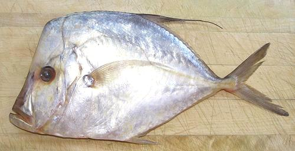
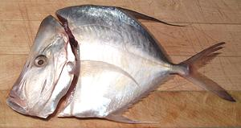

Mexican Moonfish

[Mexican Moonfish,Selene orstedii |
Hairfin lookdown; Selene brevoortii]
Both the species listed above are sold as "Mexican Moonfish" in the
markets, though S. brevoortii is officially Hairfin Lookdown
(fishbase). They are easily confused, but S. brevoortii grows
a little larger (15 vs 13 inches) and has very tiny pelvic fins -
barely visible in the photo directly down from the pectoral fin root.
S orstedii has small pelvic fins but not tiny.
These fish are Related to Jacks and Pompanos, and are found along the
East Pacific coast from Baja California to Ecuador in South America.
The photo specimen (S. brevoortii) was 13-1/2 inches long and
weighed 1 pound 0 ounces. Mexican Moonfish reproduce well and are not
considered threatened. They are not kosher due to lack of removable
scales.
More on Varieties of Fish (very
large page).
The flesh of this fish is medium colored and medium flavored, much like
the related Jacks. There is a narrow dark strip down the sides of the
backbone but it is not unpleasant in taste. I do not, however, like the
taste of the skin.
I have eaten this fish most successfully poached, either as skinned
fillets or as a "pan dressed" fish. This fish holds together well and can
be managed on the plate where I gently scrape off the skin before eating.
Buying:
This fish shows up very occasionally in the
Philippine fish markets here in Los Angles. It's not a fish you can just
go out and buy, you deal with it when you see it. The photo specimen
was purchased from a Philippine market in Los Angeles (Eagle Rock) for
2019 US $3.99 / pound.
Scales:
There are no scales. There are supposedly some
"scutes", which are modified scales along the lateral line near the tail.
While the line can be easily seen, the scutes are difficult to detect.
While scutes are technically scales, they can't be scraped off without
damaging the skin, so this fish remains "unkosher".

Cleaning:
The best way to handle this fish is to remove
the head as shown in the photo to the left. This allows very easy removal
of the innards which is difficult by any other means. The throat opening is
very high and rather small, and the keel bones run full length so you'd have
to make an incision on one side. The body cavity is very short and elongated
vertically. To use the heads for stock you need to remove the gills, best
done with a sturdy pair of long nose pliers.
Filleting:
This fish is fairly easy to fillet. The bone
structure is complete, sturdy, and very easy to follow with a knife,
and the flesh is firm. I usually cut off the bottom 1/2 inch of the fish
to remove the keel and make filleting easier. When you get to the rib
cage, just cut the ribs from the backbone with kitchen shears. The ribs
are very long, but few. Pull them with your long nosed pliers. They will
take some flesh, but there's very little flesh to take, except for the
last two. Just cut off the skirt where it has no flesh left, There are
a few centerline spines that should be pulled out forward for the length
of the body cavity.
Skin:
the skin is very thin, but also strong and very
elastic. It has a lot of shrink on a pan fried fillet, but doesn't give
a problem with poaching. I don't like the taste and recommend removing it.
Though surprisingly "stretchy", the skin can be removed using the usual
long knife and cutting board
Method. If you end up with a couple modest patches of skin
left on the fillet (I usually do), they are difficult to remove, but
won't be a problem. If you poach "pan dressed" fish the skin can be
gently scraped off on the plate, working from the centerline to the edges.
Yield:
A 9-7/8 ounce fish yielded 4-3/4 ounces of skin-on
fillet (48%) which were 4-1/8 ounces skin removed (42%).
Cooking:
The flesh of this fish remains firm enough that
skinned fillets, though thin, can be poached without breaking up. Baking
and similar methods will also work fine, though I recommend using skinless
fillets for most purposes.
Stock:
Heads, bones, and fins make a quite usable stock
simmered for 1/2 hour. There will be little oil, but it should still be
separated off using your gravy separator. I suggest not using the skins.
sf_moonmz 060410 r 110115 r 190308 - www.clovegarden.com
© Andrew Grygus 2011 - info@clovegarden.com -
Photos on this page not otherwise credited are ©
cg1.
Linking to and non-commercial use of this page permitted.